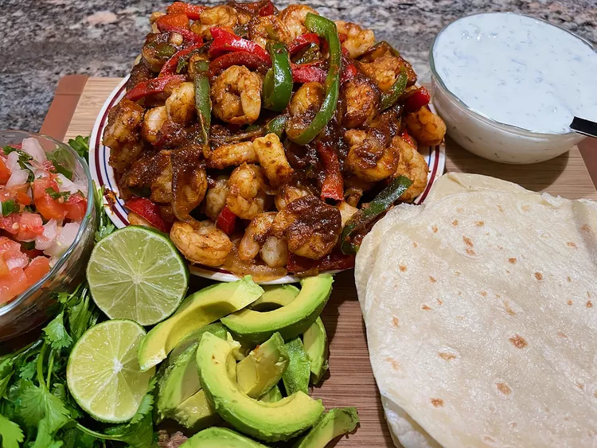

Shrimp Fajitas with Cilantro-Lime Cream

Description
Tasty shrimp combined with peppers, onions, mexican seasoning, and
drizzled with cilantro-lime cream and wrapped with tortillas.
Ingredients
- Cilantro-Lime Cream
- 1 cup sour cream
- 3 tablespoons chopped cilantro
- 2 limes, zested and juiced
- 1 clove garlic, minced
- 1/2 teaspoon salt, or to taste
- Fajitas
- 2 teaspoons chili powder
- 1/2 teaspoon cayenne pepper
- 2 teaspoons ground cumin
- 3/4 teaspoon garlic powder
- 1/2 teaspoon smoked paprika
- 1/2 teaspoon Mexican oregano
- 1/2 teaspoon salt, or to taste
- 1/4 teaspoon freshly ground black pepper
- 2 pounds large shrimp, peeled and deveined
- 1 onion, thinly sliced
- 1 green pepper, sliced vertically
- 1 red pepper, sliced vertically
- 1/4 cup olive or avocado oil, divided
- 1 lime, juiced, divided
- 10 flour tortillas, warmed
- 1 avocado-peeled, pitted, and sliced (optional)
- 1 cup purchased or homemade pico de gallo (optional)
- 1 bunch fresh cinlantro, chopped (optional)